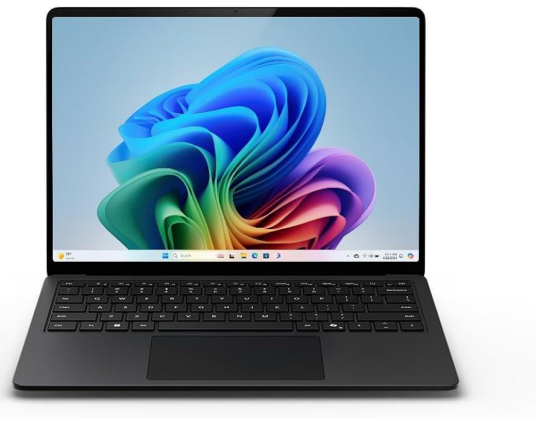

Setting up a new laptop is quick and simple using the Laptop Setup Wizard. The wizard helps you configure essential settings such as Wi-Fi, display preferences, user accounts, and system security. Once completed, your laptop will be ready for efficient use.
To start the wizard when turning on the laptop for the first time, simply follow the on-screen setup instructions. If you need to access the wizard later, click the Start Menu, go to Settings, choose System, and select Device Setup.
|
NOTE: |
If you skip certain steps during the initial setup, |
 |
Modern laptops provide enhanced security and faster startup configuration. From 2015 to the present, setup wizards have improved with features like cloud sync, biometric registration, and instant device pairing.
The wizard also helps you select region settings and system preferences. To identify the best configuration for your laptop, the wizard may collect the following information:
| Field | Description |
| Device Model | Specifies the model of your laptop |
| Location Settings | Your country/region for system preferences |
| Wi-Fi Status | Indicates available networks and connectivity |